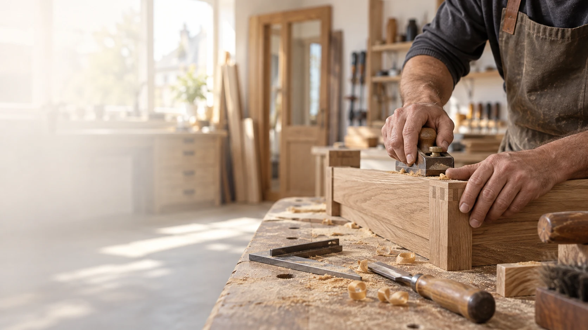

Möbelbau
Schlafzimmer, Badmöbel, Einbauschränke oder ein individuelles Möbelstück, gefertigt aus Massivholz, Furnier oder Dekor-Platten.
Mehr erfahren →
Möbelbau, Fenster, Türen, Böden und Treppen von Tischlermeister Kai Bruns und seinem Team, seit über 25 Jahren selbstständig in Norden.
Von der Maßanfertigung bis zur Reparatur: Wir übernehmen Tischlerarbeiten in und um Norden.
Schlafzimmer, Badmöbel, Einbauschränke oder ein individuelles Möbelstück, gefertigt aus Massivholz, Furnier oder Dekor-Platten.
Mehr erfahren →Aus Holz oder Kunststoff, inklusive Rollläden und Insektenschutz. Herstellung sowie fachgerechter Aus- und Einbau.
Mehr erfahren →Beratung und fachgerechte Verlegung passender Bodenlösungen für Wohn- und Arbeitsräume.
Mehr erfahren →Neubau, Renovierung oder Sanierung Ihres Treppenlaufs, passend zu Ihrem Zuhause gefertigt.
Mehr erfahren →Ob Möbel, Fenster oder Tür: Wir übernehmen Reparatur- und Instandsetzungsarbeiten.
Mehr erfahren →Möbel online konfigurieren und unverbindlich anfragen: Außenmaße, Dekor und Griffe nach Wunsch.
Mehr erfahren →Kai Bruns berät Sie direkt und plant mit Ihnen vor Ort, statt Sie an wechselnde Ansprechpartner zu verweisen.
Ob Dachschräge oder ungewöhnlicher Grundriss: Wir fertigen exakt auf Ihre Räumlichkeiten zugeschnitten.
Über 25 Jahre Erfahrung als selbstständiger Tischlermeister, ausgezeichnet mit der Ehrenurkunde zum 25-jährigen Meisterjubiläum.
Wir verarbeiten Massivholz, ausgesuchte Furniere und Dekor-Platten in sämtlichen Ausführungen.
Tischlermeister Kai Bruns gründete die Tischlerei vor über 25 Jahren. Heute arbeiten mit Kay-Uwe und Sven zwei weitere erfahrene Gesellen mit jeweils über 20 Jahren Berufserfahrung im Betrieb.
Mit unserem Möbelplaner finden Sie ein passendes Grundmodell und passen Außenmaße, Dekor und Griffe an. Nach Ihrer unverbindlichen Anfrage besprechen wir gemeinsam die weiteren Schritte, insbesondere bei Einbauschränken, Dachschrägen oder dem Innenleben eines Kleiderschranks.
Sie schildern uns Ihr Vorhaben, telefonisch, per E-Mail oder über das Kontaktformular.
Wir schauen uns die Räumlichkeiten vor Ort an und besprechen Material und Ausführung.
Ihr Möbelstück oder Bauteil entsteht passgenau in unserer eigenen Werkstatt in Norden.
Wir liefern, montieren und übergeben Ihnen das fertige Ergebnis.
Ein Ausschnitt aus Möbelbau sowie Fenster- und Türenprojekten.
Unsere Werkstatt liegt in Norden. Sprechen Sie uns gerne an, ob wir auch bei Ihnen in der Region tätig werden können.
Ja. Neben Dekor-Platten in verschiedenen Ausführungen verarbeiten wir Massivholz und ausgesuchte Furniere.
Ja, wir übernehmen Reparatur- und Instandsetzungsarbeiten an Möbeln, Fenstern und Türen.
Der Preis hängt von Maßen, Material und Ausführung ab. Nach einer unverbindlichen Beratung erhalten Sie ein passendes Angebot.
Ja, wir übernehmen Einbau und Tausch von Dachfenstern, unter anderem von Velux.
Nach Ihrer Kontaktaufnahme vereinbaren wir einen Termin für Beratung und Aufmaß vor Ort und besprechen die nächsten Schritte.
Kai Bruns berät Sie persönlich, unverbindlich und ohne Umwege.